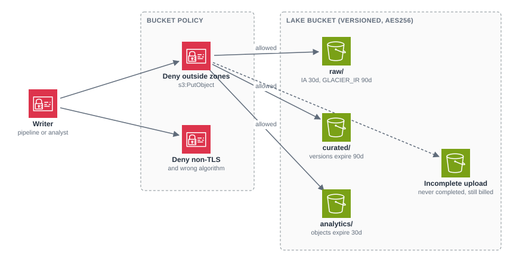
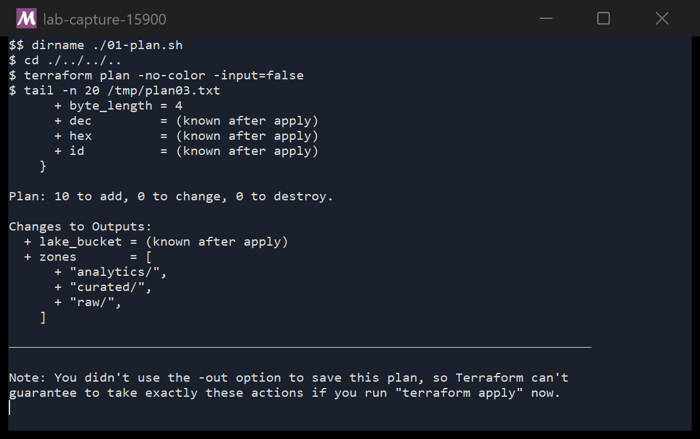
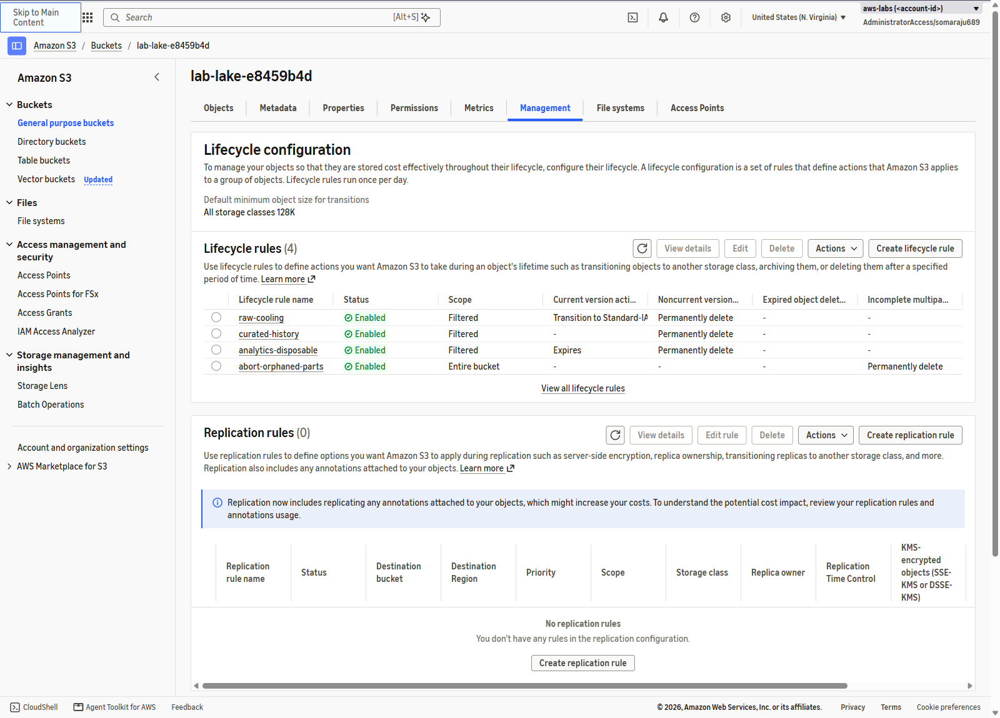

I build data platforms,
and prove they work.
Ten years on the unglamorous half of data — getting it out of the systems that produce it and into a shape someone can use. Now rebuilding that on AWS in the open: one lab a week for a year, each one designed, built with Terraform, tested against what it claims, written up, and torn down.
Authorised to work in the US
Latest lab

S3 as a data lake
The bucket refuses writes outside its own zones. A widely copied encryption policy turns out to protect nothing. And 5 MiB of billed storage hides from every listing AWS offers.

Real terminal output
Plan, apply and destroy captured from a live run — never retyped.

Console, after the fact
What AWS actually stored, next to what the code asked for.

IAM for data access
Two roles, three zones, a permissions boundary — and one test that failed for the wrong reason.
Experience